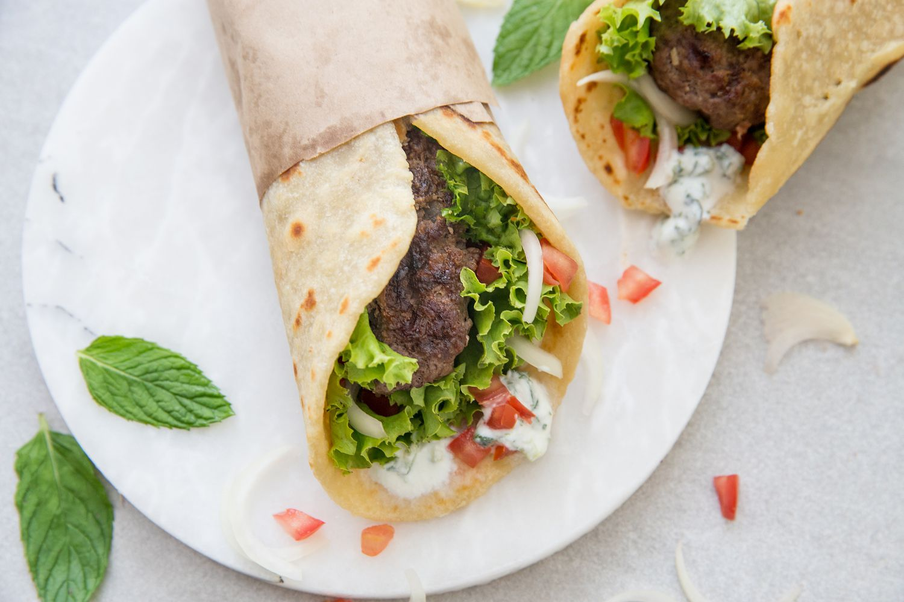

Gyros Recipe

The gyro is a classic Greek dish, with the meat traditionally cooked on a vertical spit and shaved off in individual servings
- 1 pound ground lamb, or beef
- 2 teaspoons kosher salt
- 1 teaspoon freshly ground black pepper
- 1 1/2 teaspoons ground cumin
- 1/4 teaspoon ground nutmeg
- 1 teaspoon dried oregano
- 2 cloves garlic, minced
- 1/4 cup minced red onion
- 2 teaspoons freshly squeezed lemon juice
- Oil as needed
- To make the meat mixture, throughly combine the ground lamb, salt, black pepper, cumin, nutmeg, oregano, garlic, red onion and lemon juice in a mixing bowl
- Divide into four equal portions and shape into oblong patties about 3-inch wide by 6-inch long by 1/2-inch thick
- Preheat a grill or pan over high heat
- brush the grill or grill pan with oil